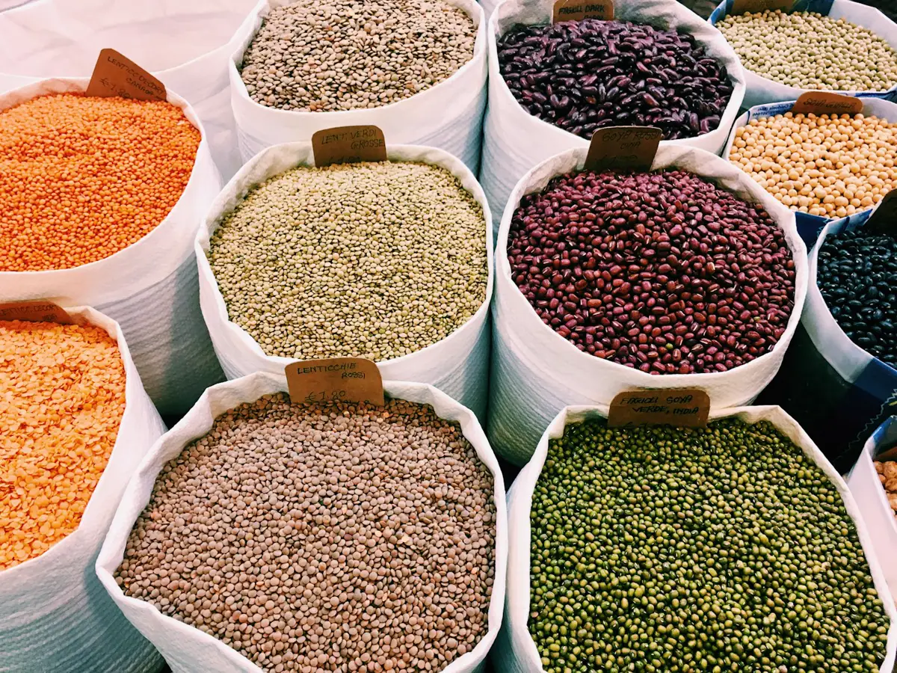
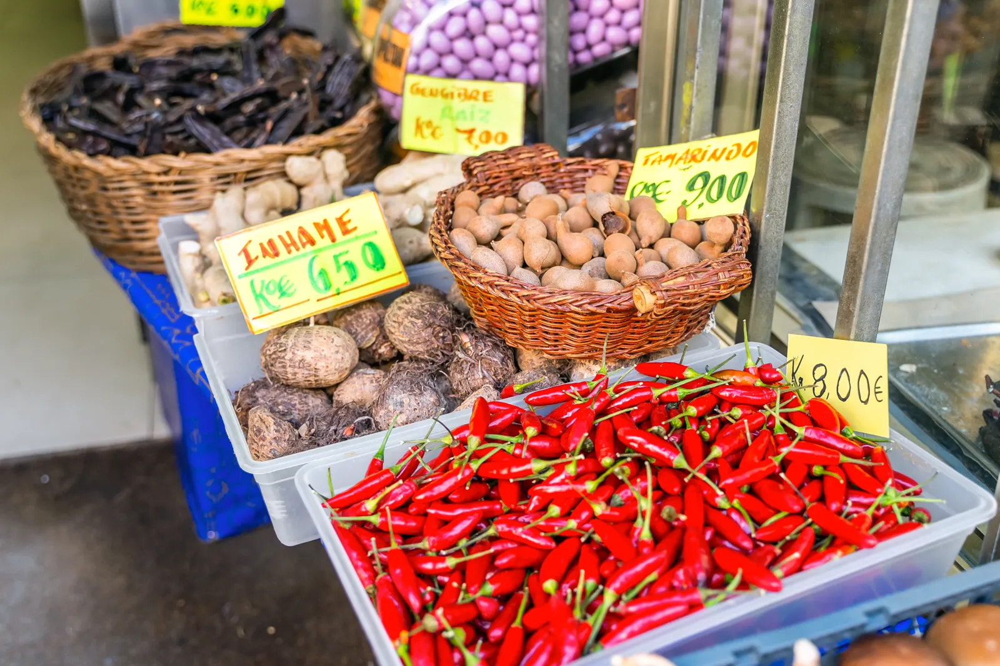
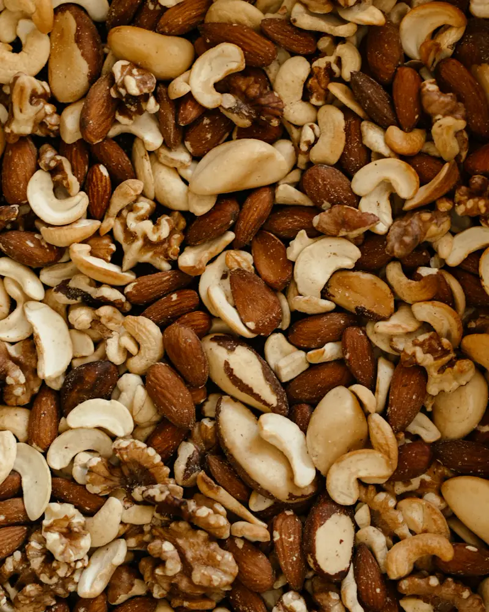
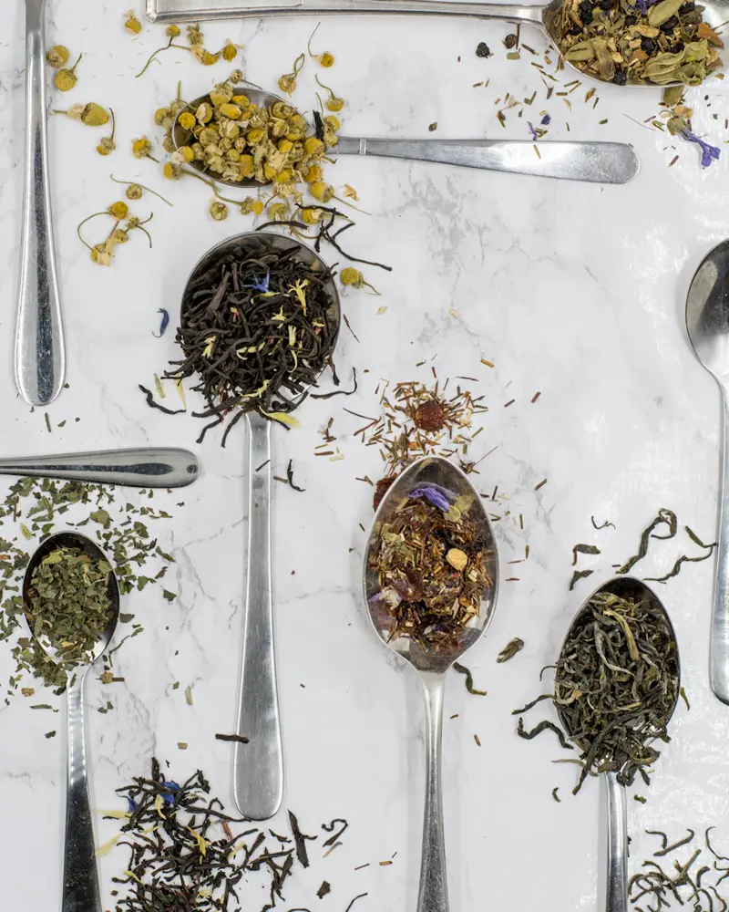
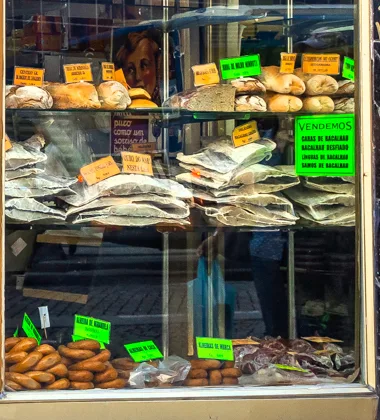
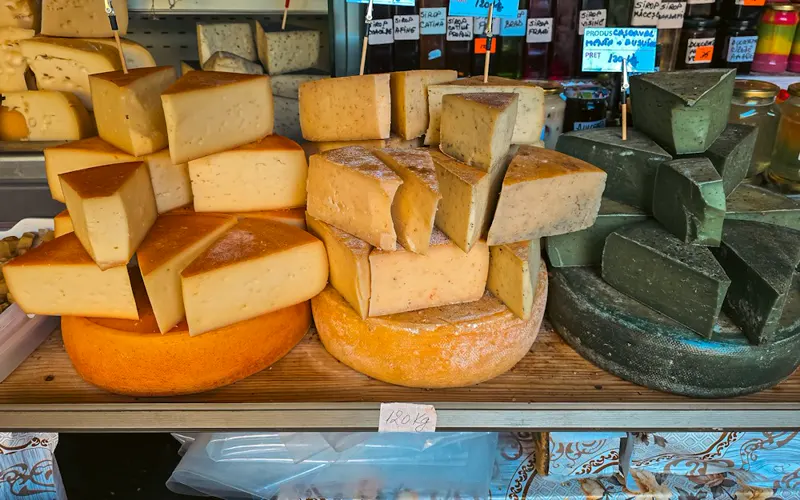
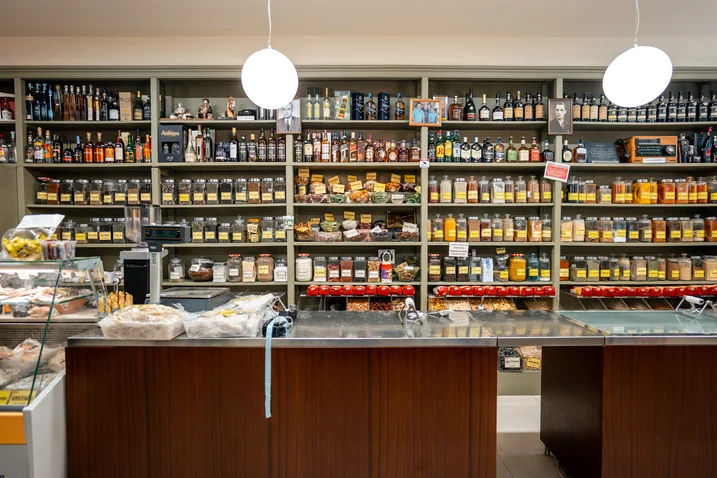
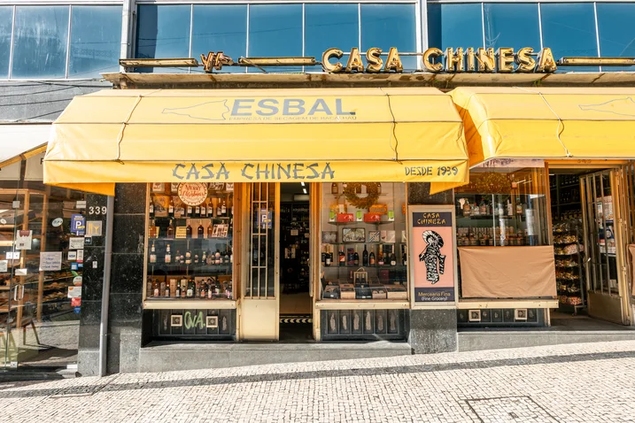

Leguminosas e farinhas
Grão, feijão, lentilhas e farinhas, de norte a sul do país.

Leguminosas, frutos secos, especiarias, chás e produtos macrobióticos e sem glúten, a granel e na medida que quiser.
Seg–Sex 9:00–19:00 · Sáb 9:00–13:00Rua Sá da Bandeira, 343

Grão, feijão, lentilhas e farinhas, de norte a sul do país.





Fundada por Joaquim Mota Cardoso e Fernando Carneiro da Silva, a casa continua nas mãos dos seus herdeiros.

| Segunda a sexta | 9:00–19:00 |
| Sábado | 9:00–13:00 |
| Domingo | Fechado |
Também entregamos ao domicílio. Ligue e combine connosco.